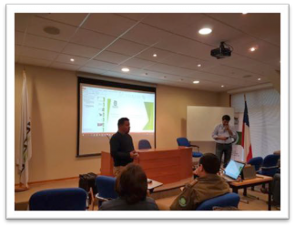
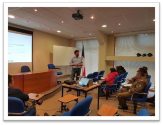
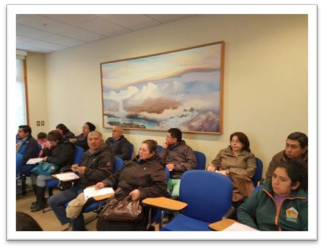
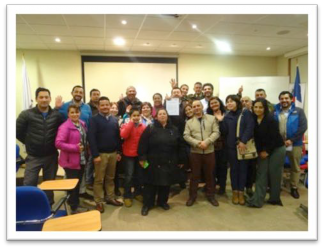

Acta de Reunión # 3


Imágenes de la reunión Fecha: 13, octubre del 2016
Asunto: Taller de levantamiento de necesidades ciudadanas - Presencial
Participantes:
Cristian López, Gobernador
Carolina Vásquez, Jefa Gabinete
Cristian Cortés, Jefe Modernizacion
Lorits Hernández, E. Emergencia

Ricardo Coloma, E. Gestión Territorial
Juntas de Vecinos
Organismo Públicos
Empresas Prestadoras de Servicios Públicos
Anibal Contreras, Jefe Proyecto MCI
Mauricio Cantillana, J Seguridad M. Quilicura

Objetivo de la reunión:
Lineamientos base y componentes de la plataforma para el registro de incidentes sobre los cuales se prestará el servicio.
Temas tratados:
Se presentó ejemplos de las plataformas 311 como línea base para el desarrollo y adopción de buenas prácticas en la aplicación CooperaNet.

Acta de Reunión # 3

Exposición del encargado de Seguridad de la Municipalidad de Quilicura, abordando los siguientes temas: uso de Telegram como herramienta de comunicación con los lideres de barrios y vecinos, buenas practicas en el uso de los chats, notificaciones de las acciones realizadas por los actores, protocoles de respuesta, no son reemplazo del ABC.
Acuerdos:
Se acordó trabajar en un listado de Tipos de incidentes, prioritarios para la comunidad, a registrar en la plataforma CooperaNet, resultado de la mesa de trabajo.